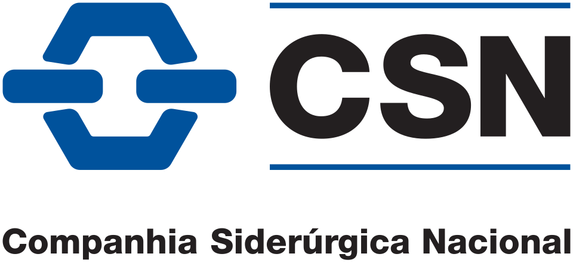

Companhia Siderúrgica Nacional
Companhia Siderúrgica Nacional은 브라질 리우데자네이루에 본사를 둔 철강 기업이다. 브라질에서 가장 큰 완전 일관제철 업체이며 라틴아메리카에서도 조강 생산량 기준 최대 규모 업체에 속한다.
최종 업데이트

Companhia Siderúrgica Nacional는 어떤 브랜드인가
브라질 최대의 완전 일관제철 업체로, 라틴아메리카에서도 조강 생산량 기준 최대 규모 업체에 속한다. 주력 공장은 리우데자네이루주 볼타레돈다 시에 있다.
슬래브, 열연·냉연 제품, 아연도금 및 주석도금 제품 등 폭넓은 철강 제품을 생산하며, 제품은 유통, 포장, 자동차, 가전, 건설 산업에서 쓰인다. 연간 조강 생산능력은 5.6 million tons, 압연 제품 생산능력은 5.1 million tons이다.
브라질에서 판매된 아연도금 강재의 약 49%를 차지했고, 2004년에는 브라질 주석도금 제품 판매의 약 98%를 차지했다. 세계적인 주석도금 제품 생산업체이며 자체 철광석 공급원도 보유하고 있다.
Companhia Siderúrgica Nacional는 어떻게 시작되고 성장했나
1941년 4월 9일 Getúlio Vargas 대통령 시기에 국영 기업으로 설립되었다. 미국과 브라질 정부의 합의(Washington Accords)에 따라, 제2차 세계대전 중 연합국에 철강을 공급하고 이후 브라질의 발전에 도움이 될 시설을 짓기 위한 것이었다.
Presidente Vargas Steelworks는 1946년 Eurico Gaspar Dutra 대통령 시기에 가동을 시작했고, 처음에는 코크스, 선철 주물, 장척 제품을 생산했다. 1970년대에 두 차례 대규모 증설이 이뤄져 1974년에는 연간 조강 생산능력이 1.6 million tons로, 1977년에는 2.4 million tons로 늘었다.
1989년에는 다시 4.5 million tons로 확대했다.
Companhia Siderúrgica Nacional의 브랜드 아이덴티티는 무엇인가
국영으로 출발해 1993년 민영화된 브라질의 일관제철 업체로, 아연도금·주석도금 제품 시장에서 높은 비중을 차지한다.
Companhia Siderúrgica Nacional의 대표 제품과 서비스는 무엇인가
슬래브, 열연 및 냉연 제품, 아연도금 제품, 주석도금 제품 등 폭넓은 철강 제품을 생산한다. 제품은 유통, 포장, 자동차, 가전, 건설 산업에서 사용된다.
1996년 2월 이후 모든 생산은 잉곳 주조 대신 연속주조 공정으로 이루어지며, 이 방식은 에너지 사용과 금속 손실을 줄인다. 2004년 1월에는 이사회가 Casa de Pedra 철광석 광산의 생산 확대를 포함한 투자 계획을 승인했다.
Companhia Siderúrgica Nacional는 지금 어떤 상태인가
1993년과 1994년 초에 열린 일련의 경매를 통해 민영화되었고, 브라질 정부는 보유하던 91%의 지분을 매각했다. 2001년 Blast Furnace #3와 Hot Strip Mill #2를 개조해 연간 생산능력을 조강 5.6 million tons, 압연 제품 5.1 million tons로 높였으며 현재도 같은 수준이다.
현재 최고경영자는 Benjamin Steinbruch이다.
Companhia Siderúrgica Nacional 로고는 어떻게 변해왔나
자주 묻는 질문
Companhia Siderúrgica Nacional는 어느 나라 브랜드인가요?
Companhia Siderúrgica Nacional는 브라질의 에너지·산업재 브랜드입니다.
Companhia Siderúrgica Nacional는 언제 설립되었나요?
Companhia Siderúrgica Nacional는 1941년 설립되었습니다.
Companhia Siderúrgica Nacional의 브랜드 아이덴티티는 무엇인가요?
국영으로 출발해 1993년 민영화된 브라질의 일관제철 업체로, 아연도금·주석도금 제품 시장에서 높은 비중을 차지한다.
Companhia Siderúrgica Nacional의 대표 제품은 무엇인가요?
슬래브, 열연 및 냉연 제품, 아연도금 제품, 주석도금 제품 등 폭넓은 철강 제품을 생산한다.
Companhia Siderúrgica Nacional는 현재 어떤 상태인가요?
1993년과 1994년 초에 열린 일련의 경매를 통해 민영화되었고, 브라질 정부는 보유하던 91%의 지분을 매각했다.
Companhia Siderúrgica Nacional의 본사는 어디에 있나요?
Companhia Siderúrgica Nacional의 본사는 리우데자네이루에 있습니다(위키데이터 기준).
Companhia Siderúrgica Nacional의 공식 웹사이트는 어디인가요?
Companhia Siderúrgica Nacional의 공식 웹사이트는 http://www.csn.com.br/ 입니다.
출처와 검증
Companhia Siderúrgica Nacional 관련 참고: 공식 웹사이트 · 위키데이터 Q400384 · 영어 위키백과. 브랜드명은 한글과 원어를 함께 표기하되 데이터에 없는 표기는 만들지 않습니다. 기원 국가·설립연도는 검수된 정의문에서 확인된 값을 우선하고, 없을 때만 공식 웹사이트 URL이 일치하는 위키데이터 개체의 값을 씁니다. 탄생일의 월·일은 위키데이터, 위키백과 정보상자, 본문 가운데 같은 연월로 확인되는 값만 싣고, 출처끼리 다르면 싣지 않습니다. 위키데이터 값은 2026-11-14 기준입니다.